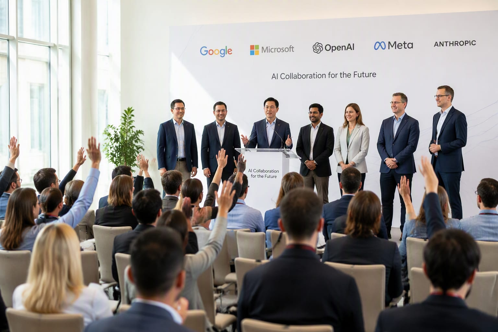

Meta, Microsoft, Nvidia, IBM and Palantir formed a coalition with Hugging Face and the Linux Foundation to push back on open-weight restrictions — the counter-lobby to the safety letters.

While one group of companies asks Washington to pace frontier AI, another coalition — Meta, Microsoft, Nvidia, IBM and Palantir among ~25 signatories — is pushing policymakers not to restrict open-weight models.
The coalition’s letter warns that “premature restrictions” on open-weight AI would hand the advantage to competitors, and launched the Open Secure AI Alliance with Hugging Face and the Linux Foundation.
The open-weight position has data behind it: Stanford’s index shows open-weight downloads now lead globally, with Chinese models in the majority.
August drew both battle lines in the same month: 1,300 employees asking for pacing on one side, the open-weight coalition asking for freedom on the other.
Whichever framing wins in Washington decides the default operating conditions for half the industry.
Two letters, two futures: pace the frontier, or free the weights.
“Open weight AI can expand access, strengthen competition, improve security, and help sustain American AI leadership.”
“Nvidia, Microsoft, Meta and ~25 companies urged policymakers not to impose premature restrictions on open-weight AI models.”